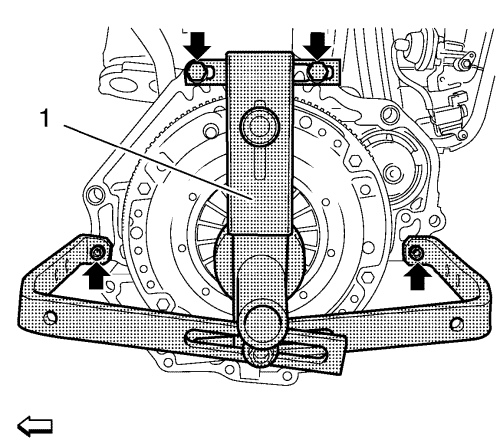
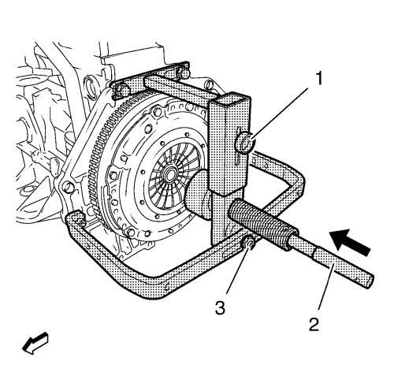
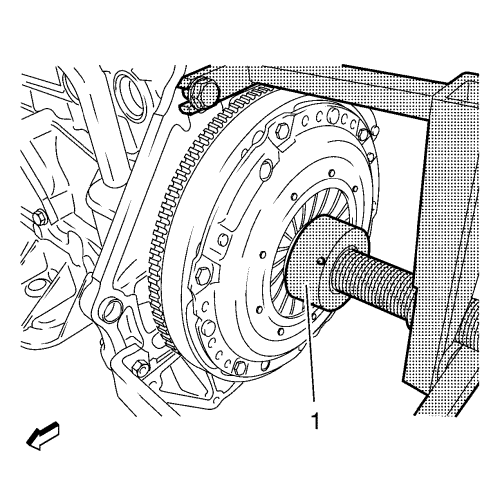
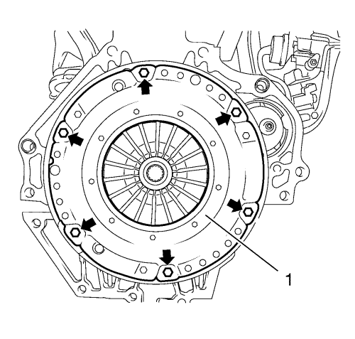
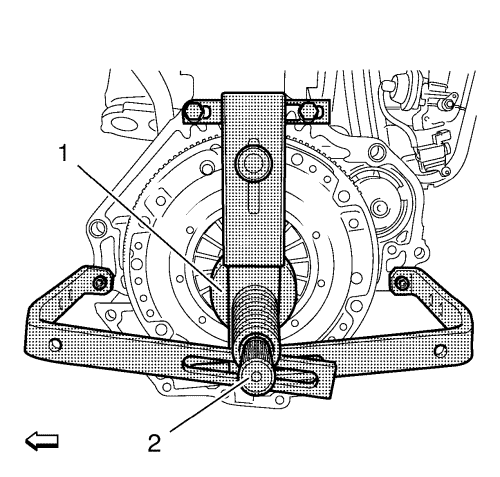
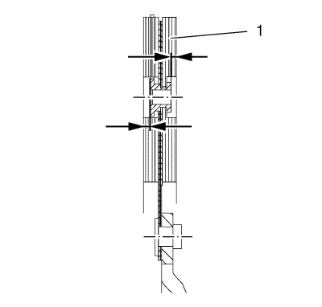
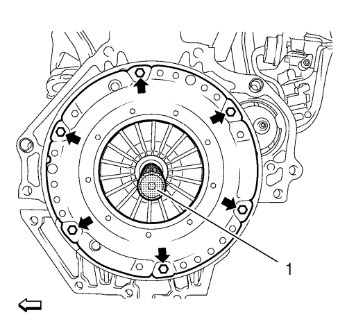
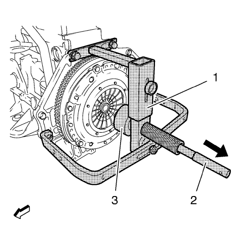

Sustitución de la presión del embrague y del disco director D33
Herramientas especiales
DT-6263 Herramienta de desmontaje y montaje
Si desea informarse sobre herramientas regionales equivalentes, consultar Herramientas especiales .
Procedimiento de desmontaje
Nota:
| • | Para evitar daños en las lengüetas elásticas del plato de presión, utilice la herramienta DT-6263 para desmontar y montar el plato de presión. |
| • | Tenga en cuenta las diferentes longitudes de los soportes para acoplar la herramienta de desmontaje y montaje DT-6263 al bloque motor inferior. |
- Extraiga la caja de cambios. Consultar Sustitución de la caja de cambios .

Nota: La herramienta de montaje/desmontaje DT-6263 sólo puede acoplarse al bloque motor, y no al cárter de aceite.
- Acople la herramienta de desmontaje y montaje DT-6263 (1) al bloque motor.
Nota: No apriete los pernos.
- Monte los 4 pernos (flechas).

- Acople una guía central de embrague adecuada al mandril de centrado (2) DT-6263-21.
- Fije la herramienta de desmontaje y montaje DT-6263.
| • | Alinee la herramienta de desmontaje y montaje DT-6263 en el centro. |
| • | Introduzca el mandril de centrado DT-6263-21 con la guía central del embrague a través de la herramienta de desmontaje y montaje DT-6263 en el disco de embrague y el centro del cigüeñal (flecha). |
| • | Apriete los 4 pernos de la herramienta de desmontaje y montaje DT-6263 en el bloque motor. |

- Descargue el disco director del embrague.
| • | Mueva la herramienta de desmontaje y montaje (1) DT-6263 de modo que se apoye contra las lengüetas elásticas del disco director del embrague. |
| • | Gire la herramienta de desmontaje y montaje DT-6263 hacia la derecha hasta el tope. |

- Desmonte el plato de presión (1) del embrague del volante motor.
- Desmonte y DESECHE los 6 pernos (flechas) del plato de presión del embrague.

- Desacople el plato de presión y el disco director del embrague.
| • | Gire la herramienta de desmontaje y montaje (1) DT-6263 hacia la izquierda, hasta el tope. |
| • | Retire el mandril de centrado (2) DT-6263-21 con la guía central del embrague. |

Nota: Los platos de presión y los discos directores de embrague contaminados por cuerpos extraños (aceite, agentes de limpieza, etc.) deben ser sustituidos. Compruebe si el disco de embrague presenta daños y óxido de fricción en el perfil del cubo, y sustitúyalo si fuera necesario. No limpie el plato de presión ni el disco de embrague con un limpiador a alta presión o una máquina para lavar componentes.
- Revise si el plato de presión y el disco de embrague (1) están desgastados, y sustitúyalos si es necesario.
- Revise el saliente del forro en los remaches del forro del embrague. El disco de embrague debe sustituirse si el saliente del forro es inferior a 0,5 mm (0,020 pulg.) (flechas). Así mismo, apriete el disco de embrague contra el eje de entrada de la caja de cambios y compruebe si se mueve con facilidad.
Procedimiento de montaje

Nota: El rótulo transmission side (lado del cambio) debe situarse mirando hacia la caja de cambios.
- Monte el plato de presión del embrague y el disco de embrague al volante motor.
- Centre el plato de presión del embrague y el disco de embrague con el mandril de centrado (1) DT-6263-21 y la guía central del embrague.
Nota: No apriete los pernos.
- Monte los 6 pernos NUEVOS (flechas).
- Monte el plato de presión del embrague en el volante motor.
- Gire la herramienta de desmontaje y montaje (1) DT-6263.
Precaución:Consulte Precaución con las fijaciones en la sección Prólogo.
- Apriete los 6 NUEVOS pernos en cruz a 28 N·m (21 lib. pie).

- Desacople la herramienta de desmontaje y montaje DT-6263 (1) del bloque motor.
| • | Gire la herramienta de desmontaje y montaje (3) DT-6263 hacia la izquierda, hasta el tope. |
| • | Retire el mandril de centrado (2) DT-6263-21 y la guía central del embrague (flecha). |
| • | Quite los 4 pernos de la herramienta de desmontaje y montaje DT-6263 del bloque motor. |
- Monte la caja de cambios. Consultar Sustitución de la caja de cambios .
| © Copyright Chevrolet. Reservados todos los derechos |